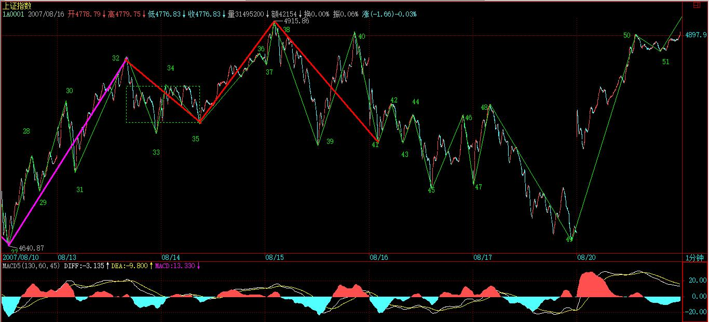

(2007-08-16 23:02:06)
虽然67课已经给出了线段划分的标准，但由于那里用的是比较抽象的类数学语言，所以理解上可能还有困难，因此，逐一进行再分辨。
首先要分辨的，是特征序列中元素的包含关系。
注意，特征序列的元素包含关系，首先的前提是这元素都在一特征序列里，如果两个不同的特征序列之间的元素，讨论包含关系是没意义的。【韶山映山红】特征序列是线段的笔，表征该线段某些特征的。所以“两个不同的特征序列”就是两个不同的线段各自的特征序列。同一个线段的特征序列元素之间有包含问题，不同线段的特征序列元素之间不讨论包含关系。】
显然，特征序列的元素的方向，和其对应的段的方向是刚好相反的，例如，一个向上段后接着一个向下段，前者的特征序列元素是向下的，后者是向上的，因此，根本也不可能存在包含的可能。【韶山映山红】向上线段的特征序列元素是向下笔，向下线段的特征序列元素是向上笔，向上笔和向下笔“根本也不可能存在包含的可能”。】
那么，为什么可以定义特征序列的分型呢？【韶山映山红】这里是顺着前面那句话来的：既然前后两个线段的特征序列方向不同，为什么可以定义特征序列的分型呢？】
因为在实际判断中，在前一段没有被笔破坏时，依然不能定义后特征序列的元素，这时候，当然可以存在前一特征序列的分型，【韶山映山红】没有被笔破坏，就是第二种情况。走出了与前一段相反方向的走势，但是没有发生笔破坏，因为不知道前一线段是否真的会被破坏，所以还不能说新线段，也就“不能定义后特征序列的元素”。】这时候，由于还在同一特征序列中，因此，序列元素的包含关系是可以成立的；【韶山映山红】第二种情况分析是否线段破坏，是分析后面有没有出现分型。但是作为转折点，前一段还是需要有分型成立，这样，当后一个对应的分型成立的时候，才能够顶底相连成为线段。所以这里要述说“前一特征序列的分型”，分析这个分型的时候，特征序列元素的包含关系成立，前后都做包含处理。】
而当前一段被笔破坏时，显然，最早破坏的一笔如果不是转折点开始的第一笔，那么，特征序列的分型结构也能成立，因为在这种情况下，转折点前的最后一个特征序列元素与转折点后第一个特征元素之间肯定有缺口，而且后者与最早破坏那笔肯定不是包含关系，否则该缺口就不可能被封闭，破坏那笔也就不可能破坏前一线段的走势。【韶山映山红】这里说的“破坏前一线段的走势”是指笔破坏。】
这里的逻辑关系很明确的，线段要被笔破坏，那么必须其最后一个特征序列的缺口被封闭，否则就不存在被笔破坏的情况。【韶山映山红】缺口封闭是笔破坏的标志，但不是线段破坏的标志，更不是线段破坏的要求。不封闭也可能发生线段破坏。】
那么，现在只剩下最后一种情况，就是最早破坏那笔就是转折点下来的第一笔，【韶山映山红】也就是第一种情况。】这种情况下，这一笔，如果后面延伸出成为线段的走势，那么这一笔就属于中间地带，既不能说是前面一段的特征序列，更不能说是后一段的特征序列，在这里情况下，即使出现似乎有特征序列的包含关系的走势，也不能算，因为，这一笔不是严格地属于前一段的特征序列，属于待定状态，【韶山映山红】“即使出现似乎有特征序列的包含关系的走势，也不能算，”说的是第一种情况的第一笔的包含处理，不向前做包含处理。如下图，粉色那笔不是向前包含左边绿色笔，而是向后包含右边绿色笔。】
一旦该笔延伸出三笔以上，那么新的线段就形成了，那时候谈论前一线段特征序列的包含关系就没意义了。
总之，上面说得很复杂，其实就是一句话，特征序列的元素要探讨包含关系，首先必须是同一特征序列的元素，这在理论上十分明确的。【韶山映山红】第一种情况即使有包含也不算。第二种情况有缺口不可能包含。总之，这里明确了不向前包含。】
【韶山映山红】上面一大段话，其实想说明的是，不管是什么情况，只要前一线段成立，就有相应的顶分型存在。第一种情况，本身就是证明顶分型成立，当然不用说了。虽然第二种情况是仰仗后面线段成立来反证前面线段的成立，但是前面线段也还是有一个顶分型存在的，即使这个顶分型没有自己证明自己的能力，也依然是顶分型。】
从上面的分析就可以知道，从转折点开始，如果第一笔就破坏了前线段，进而该笔延伸出三笔来，其中第三笔破点第一笔的结束位置，那么，新的线段一定形成，前线段一定结束。
这种情况还有更复杂一点的情况，就是第三笔完全在第一笔的范围内，这样，这三笔就分不出是向上还是向下，这样也就定义不了什么特征序列，为什么？因为特征序列是和走势相反的，而走势连方向都没有，那怎么知道哪个元素属于特征序列？
这种情况，无非两种最后的结果：
1、最终还是先破了第一笔的结束位置，这时候，新的线段显然成立，旧线段还是被破坏了；【韶山映山红】这里说的判断依据是“先破了第一笔的结束位置”，没说第一笔被非包含处理的情况下怎么办。比如下图所示，判断点是否上移，没说。这里有是否能够底在顶中的问题。★以后研究。】
2、最终，先破第一笔的开始位置，这样，旧线段只被一笔破坏，接着就延续原来的方向，那么，显然旧线段依然延续，新线段没有出现。
在67课里，把线段的划分分为两种情况，显然，分清楚是哪种情况，对划分线段十分关键。
其实，在那里已经把问题说得很清楚，判断的标准只有一个，就是特征序列的分型中，第一和第二元素间不存在特征序列的缺口。【韶山映山红】缠中说禅在后面的问答中说了，此处漏了一个“存”字。完整的句子是：“判断的标准只有一个，就是特征序列的分型中，第一和第二元素间存不存在特征序列的缺口。”】
从上面的分析可以知道，这个分型结构中所谓特征序列的元素，其实是站在假设旧线段没被破坏的角度说的，而就像所有的分型一样，就算是一般K线的，都是前后两段走势的分水岭、连接点。【韶山映山红】第一种情况是假设前一段未完，考察前一段特征序列的分型。第二种情况是假设下一段未完，考察下一段特征序列的分型，如果下一段完成，则反推前一段的完成。】
这和包含的情况不同，包含的关系是对同一段说的，而分型，必然是属于前后的，这时候，在构成分型的元素里，如果线段被最终破坏，那后面的元素肯定不是特征序列里的，也就是说，这时候，分型右侧的元素肯定不属于前后任何一段的特征序列。

这个道理其实很明白，例如前一段是向上的，那么特征序列元素是向下的，而在顶分型的右侧元素，如果最终真满足破坏前线段的要求，那么后线段的方向就是向下的，其特征序列就是向上的，而顶分型的右侧元素是向下的，显然不属于后一段的特征元素，而该顶分型的右侧元素又属于后一段，那么显然更不是前一段的特征元素。【韶山映山红】但是“该顶分型的右侧元素”又属于前一段分型的组成部分，所以有些人就绕晕了。】
所以，对于顶分型的右侧特征元素，只是一般判断方面的一种方便的预设，【韶山映山红】预设破坏成立，然后验证。】就如同几何里面，添加辅助线去证明问题一样，辅助线不属于图形本身，就如同顶分型的右侧特征元素其实不一定属于任何的特征元素，但对研究有帮助，当然是要大力去用的，如此而已。
其实，线段的划分，都是可以当下完成的，无非是如下的程序：
假设某转折点是两线段的分界点，【韶山映山红】大胆假设，小心求证。每一个新高新低都可以做一次假设。】
然后对此用线段划分的两种情况去考察是否满足，【韶山映山红】考察第一笔是否有笔破坏，或者说，是否有特征序列缺口。】
如果满足其中一种，那么这点就是真正的线段的分界点；【韶山映山红】原线段完成，“假设某转折点是两线段的分界点”成立。】
如果不满足，那就不是，原来的线段依然延续，【韶山映山红】原线段没有被破坏，“假设某转折点是两线段的分界点”不成立。】
就这么简单。【韶山映山红】前一个线段完成以后，要对每一个转折点做这样的判断。第二种情况容易在这个地方出错。】
特征序列的分型中，第一元素就是以该假设转折点前线段的最后一个特征元素，第二个元素，就是从这转折点开始的第一笔，显然，这两者之间是同方向的，因此，如果这两者之间有缺口，那么就是第二种情况，否则就是第一种，然后根据定义来考察就可以。
这里还要强调一下包含的问题，上面的分析知道，在这假设的转折点前后那两元素，是不存在包含关系的，因为，这两者已经被假设不是同一性质的东西，不一定是同一特征序列的；【韶山映山红】这个不存在的意思是说，即使有包含关系，我们也假装它不存在。】
但假设的转折点后的顶分型的元素，是可以应用包含关系的。【韶山映山红】这里没说是第一种情况还是第二种情况，所以判定两种情况都一样。】
为什么？因此，这些元素间，肯定是同一性质的东西，或者就是原线段的延续，那么就同是原线段的特征序列中，或者就是新线段的非特征序列中，反正都是同一类的东西，同一类的东西，当然可以考察包含关系。【韶山映山红】至此，可以总结特征序列元素包含关系的原则：前不包，后包。】

估计看了上面的话，很多人更晕了。下面有几个图，各位可以仔细揣摩一下。【韶山映山红】下面缠师手绘的图。】但最好还是习惯从定义出发。
另外，大盘网友问到的那个图，显然，根据定义，是两个线段，【韶山映山红】大盘网友的问答在70课笔记的最后部分，图的链接已经失效，无法考证。】
而今天42-44的分段，显然也是成立的。【韶山映山红】为什么说这三段？没觉得有什么特别的啊。★42-43这一段，我用通达信的历史数据有三笔，42-43-44的分段成立。飞狐历史数据42-43只有一笔，线段不成立，42-45就只有一段。缠师原图放大也看不清楚。】
注意，下图最后一个有问题，请看课程81里的更正说明。
【韶山映山红】81课是这样说的：“另外，有人提到71课里最后一个图，那个图显然是错的，问题就在于与这里类似的，把7的位置画高了，应该类似7的位置比类似5的位置低才对，那才是三段，当时画的时候，没特别注意。所以这里必须指出。”】

【韶山映山红】这里的问题在于包含问题。第一特征序列的顶分型中，第一和第二元素（1-2和3-4）间存在特征序列的缺口，线段3-4-5-6对线段0-1-2-3的破坏属于第二种情况，要分析第二特征序列的底分型成立。如果7不低于5，6-7就包含4-5了，第二特征序列没有出现底分型，则线段3-4-5-6对线段0-1-2-3的破坏不成立。如果7低于5，第二特征序列出现底分型，则线段3-4-5-6对线段0-1-2-3的破坏成立。至于线段6-7-8-9对线段3-4-5-6的破坏，是图上画成了第一种情况，所以直接成立了。如果7低于4，又成了第二种情况，就还不足以判断是否成立。】

【韶山映山红】这里还有一个问题，就是9能不能高于3的问题。4-5、6-7、8-9构成底分型的时候，前面的课程说8-9突破3而不能成为底分型的特征序列了。在69课笔记的问答部分，2007-8-13 21:56有实例专门说这个问题。那个实例是上证指数1分钟线的实盘，这里是白纸画图，很显然，在缠师的内心里，并不介意9的新高。这个前后矛盾，应该判定是规则的进化。★81课的配图也同样默许了这个规则的进化。后面缠师实盘线段划分同样使用了这样的规则。】

(2007-08-17 08:59:11)
昨晚的教你炒股票71，是对原有概念的一个再分辨，所谓银碗盛雪，不辩不明。而打坐，更要辩，首先要辩的就是所谓的名师。
据本ID所观，近现当代的所谓名师，一万个里面都难找一个有正眼的，基本都是以盲引盲。【韶山映山红】正眼，即正法眼藏。《景德传灯录·希运禅师》：“ 马大师 下有八十八人坐道场，得 马师 正眼者，止三两人。”正法眼藏：禅宗用来指全体佛法（正法）。朗照宇宙谓眼，包含万有谓藏。相传释迦牟尼在灵山法会以正法眼藏付与大弟子迦叶，是为禅宗初祖，为佛教以“心传心”授法的开始。】
给出几条最基本的辩师标准：
1、任何为了财物、名闻等而忽悠的，绝无明师。古代大德，明心后，为大众负米担柴，此真风范，岂现在的鼠辈可知？
2、菩萨低眉，不离金刚怒目，消极避世、混沌黑白者，皆鼠辈，杀尽人间不平才是真解脱，软骨头、和稀泥、畏权避世、都不是真明心者。【韶山映山红】“薛道衡游钟山开善寺，谓小僧曰：‘金刚何为怒目？菩萨何为低眉？’答曰：‘金刚怒目，所以降服四魔；菩萨低眉，所以慈悲六道。’”《太平广记》】
3、世间一切正邪游戏、三教九流学问，一一皆应通晓，此真菩萨行。
4、不息妄念，不净其心。真心本净，何劳其净？世界就是一大妄念，非在鬼窟里玩玩念头游戏就可以息什么妄念了。【韶山映山红】“菩提本无树，明镜亦非台。 本来无一物，何处惹尘埃！”六祖坛经慧能。】
5、至于那些把四禅八定当禅、摆弄几个佛教的死名词就到处忽悠的，连狮子虫都算不上。【韶山映山红】“狮（师）子身中虫，自食狮（师）子肉，非外道天魔能破。”】
6、心外求法，玩什么唯物的鬼把戏，不过是自欺欺人；心内求法，摆弄各种唯心把势，那不过是在意识鬼窟里自渎。心、非内非外，非物非意，非当下而不离当下，岂可求？不求不失，求而不得，乱走作干什么？
以上只是随便写了几条，以后有空，本ID会把有代表性的所谓名师的言论进行辨析，指出其荒谬错漏之处，不到其境，不明其事，本ID正要指出其境之歧。
至于第三说的那念，横隔膜下送气，非呼吸之气，世间也无横隔膜下有呼吸之气之理。那不过是一念，只要有这一念，至于是否真有气从横隔膜下送出，根本就无关紧要。【韶山映山红】回应网友有关《教你打坐3：打坐前的基本功夫》的疑问。】
把横隔膜以上当成一气嘴，身根发动病根也发动，那都是实有之事，并不是什么比喻，更不是什么副作用。不把潜伏的病根发动起来，等着让他变成真病要你的命，这才不叫副作用？世人之颠倒也算一绝了。至于有真病，该干什么干什么，都不是什么大不了的事情。
注意，存此一念，并不是脑子里想着，忘了就没了。这一念，就算你在睡觉中也不曾离你，这念如水，你睡觉是水上浪息，不睡觉是水上浪起，但水还是水，这一念还是一念，无所从来，无所从去。根本不需要去守，也不怕去丢失。
逐步，你的自然呼吸、脑子里的念头闪动，你身体上的气脉活动，都会一一明晰起来。但这些，都是水上的浪息浪起，什么大周天、小周天，都不过是浪息浪起。
再进一步，这世界的一切现象，这世界本身、时间空间，都不过是浪息浪起。注意，这不是想象，而是你以最明晰的状态明晰的一切。世界的浪息浪起就如同你身体、呼吸、念头闪动一样明晰。
(2007-08-17 15:58:48)
全球资本市场这连续几年的多头氛围，好不容易给空头逮着一机会，各种衍生工具一起作用，大有来一次1987年的味道。或者，至少怎么都来次1997年。其实，2007年要出点事，是天经地义的，看看1987-1997-2007，瞎子都能看出规律来。不过，由于目前的全球化体系，各国间如果能有效配合，震荡的力度是可以充分减少的。例如，1997就比1987要小。【韶山映山红】2017又会怎么样呢？★】
【韶山映山红】网文：1987年美国金融地震。10月19日星期一，纽约股票市场爆发了历史上最大的一次崩盘事件，震惊了整个金融世界，并在全世界股票市场产生“多米诺骨牌”效应。造成美国股票市场发生剧烈振荡的直接原因是金融投机，导致了股票市场的不稳定，美国连年出现的巨额财政赤字和贸易赤字是引发这次股票暴跌的罪魁祸首。在1987年暴跌以前，美国连续5次提高利率，投资股票的利润相对较低，导致了相当一部分资金持有人的投资方向发生了变化。 这次股市暴跌，对世界经济有着非常大的影响。首先，使投资者和消费者的信心大受损伤。其次，股市暴跌引起了债券市场和黄金市场的价格上涨，同时使汇率下跌，对各个国家之间的经济关系造成了破坏。】
【韶山映山红】网文：1997年亚洲金融危机。从表面上看，亚洲金融危机的直接导火索是国际金融投机商的兴风作浪。实际上，导致这场金融危机的深层原因则是这些国家的经济结构性失调；金融调控不力；经常项目赤字过高；过分依赖外国游动资本等众多原因。亚洲金融危机持续两年多，是战后世界规模最大、影响最深的金融危机。它使一些国家经济一度衰退，世界经济增长放慢，1998年世界国内生产总值的增长率将只达1997年的将近一半。东南亚金融危机造成的区域性通货紧缩，以及对全球经济的负面影响，在相当一段时间内都难以解除。】
【韶山映山红】2008年环球金融危机 。又称金融海啸、信用危机及华尔街海啸等，是一场在2007年8月9日开始浮现的金融危机。自次贷危机爆发后，投资者开始对按揭证券的价值失去信心，引发流动性危机。即使多国中央银行多次向金融市场注入巨额资金，也无法阻止这场金融危机的爆发，导致相当多的大型金融机构倒闭或被政府接管。】
站在货币战争的角度，本ID从来都认为，美国人的这些把戏，不过是让全世界为他们的堕落埋单，所以根本没有任何值得同情的理由。而且，因为美国人在世界资本体系中的位置，他们受到的惩罚其实更多让全世界分享了，站在根本的角度，那不过是美国人的一个暗算，道理很简单，涨不过你，难道不可以拖累你？一起跌下来，让你更惨，或者将自己的烂东西让全世界一起背，你说，最后最大的利益者难道不是美国人？
美国不是泰国，美国就算崩盘了，其中依然会渔利不少，肯定还是大赢家。至于美国的最核心的统治阶级，最核心的利益集团，那更是赢家中的赢家。现在的问题是，这暗算是否把你给暗算了。
当然，对于一般散户来说，这些问题都没必要研究。今天，已经有熟人在说，上周刚过去香港的已经没了一半了。天下乌鸦一般黑，有什么奇怪的。以为QDII就如何有投资价值，那是脑子进水了。
让工行去为美国人下半旗帜吧，二、三线股可不陪你们玩。今天，依然有不少二、三线股企图星火燎原，不和美国人一般见识。这能否成为共识，这就不好说了。毕竟，现在有国外背景的资金，都在夺路而逃，甚至，很多人要把这里的资金拿去填美国月亮的窟窿，那就让他们的资金被资本市场人道毁灭去吧。
可以肯定地说，本周全球的恶劣走势，会引发各国金融当局的强力介入，因此，一个有力的反弹的出现，是很正常的，至于之前是否要制造空头陷阱，那并不重要。站在大方向看，这个反弹后，如果各国金融当局的政策不得力，甚至更大可能的，有某些全球利益集团，故意要政策不得力，那么，更大的下跌还在后面。看看1987年的走势，第一段的下跌并不严重，反而是反弹后的下跌才真正的令人开眼。【韶山映山红】6124也是这样玩的。5178就换了一个玩儿法。】
所以，这次10年周期的金融风暴的第一次下跌，并不是太重要的，关键是看后面反弹后基本面以及各国玩法的状态，那才是关键所在。
国内市场，本来基本面上就有所不同，如果能在这次波动中，把某些外国资金给清理掉，这也算是一件好事。但如果外面的世界继续狂风暴雨，说这里一点都不受影响，那是脑子进水了。想想那些从非法渠道进来的资金，他们的老家出事了，你说他们能不受影响？他们受影响了，国内的市场能不受影响？
技术上，30分钟中枢震荡已经成立，这没什么可说的，在前面已经反复说到这种情况的边界条件。【韶山映山红】49跌破5分钟中枢8-17的高点14，5分钟中枢8-17和5分钟中枢32-49扩张升级，形成30分钟中枢。】
图就不用贴了，今天的分段太简单，周一一起帖，这样可以节省一个图的上传量，这里的总量只有200，用不了几天。【韶山映山红】缠师总是处于忧患中。事实上，200的额度只用了63个。由于没有及时发布线段划分图，所以38开始的下跌，这时候已经有一个9段升级的问题了。这个当下如何处置？★由于32-35的1分钟中枢到41已经完成5分钟中枢的扩张升级，所以后面不再考虑9段升级的问题，而是直接划分1分钟走势。★另外，按照飞狐的历史数据，48-49应该有3段。】
个股上，一线成分股，将跟随外围，一旦外围走稳，将引发大反弹。二、三线股，关键是看这次资金的流入情况，但无论如何，个股行情将再次活跃。
最后问一句，600139，以前对他仇恨无比的，现在是什么心情？5月28到7月6日，就一个月的洗盘，都受不住，那还玩什么？
【韶山映山红】600139绵阳高新，2007-04-11变更为*ST绵高，2009-06-04变更为西部资源。问答中的“等比数列”。】

不过，这也没什么，好象这里没说过的600594。本ID一个文化界的熟人，6月份在11、12元买了，明确告诉至少要翻倍。前两天，在腐败时碰到，说在10元砍掉了，因为听别人说，这公司要破产。本ID只能很有礼貌地无话可说了。
【韶山映山红】600594益佰制药。】
算了，废话就不说了，周末，腐败才是王道。
各位，腐败快乐。
先下，再见。
(2007-08-18 11:33:06)
上传音乐的网站不行，大一点的文件都上不去，马勒一首交响乐只搞了两乐章就不行了，只能用自己十八岁写的第一首无调性音乐滥竽充数。由于这有MID文件，比较小，所以还能上传，但MID的效果肯定不行，将就听吧。
中午要外出，话就不多说了。由于是无调性的，各位可能听着不习惯，就当听一个闹，反正也就3分钟。
作品的题目---《寂》
先下，再见。
(2007-08-19 13:30:09)
恰逢七夕，不可无诗。
九天织女，一地牛郎，鹊桥夜夜贯霓虹，月朦胧、鸟朦胧，过桥费只二三铜，诗曰：
七夕七律赠牛郎
缠中说禅
昨日风流今土巴
新潮美草竞香花
好男儿丸子腰子
大丈夫三爷二爷
武曌宫中情不了
文明世界爱无遮
英雄煮酒雷霆激
一夜牛郎一夜家
(2007-08-20 08:22:59)
本ID在3月19日写的 “神州自有中天日，万国衣冠舞九韶”，给出了本轮大牛市的一个基本判断，就是至少再延续20年、上升3万点，这个观点依然有效，没有任何需要修改的地方。
在同一文章中，更给出了本轮行情第一阶段走势的基本特征，现引用如下：
“第一阶段行情，伴随着中国股市本身的制度性、结构性完善，其后，中国股市才真正具备参与全球化盛宴的资格。全流通、整体上市、两大交易所的功能重组、人民币逐步可自由兑换等，都不过是这种制度性、结构性完善的必然步骤。这一阶段，行情最主要体现在以权重股为代表的成分股上。在总市值超越GDP之前谈论股市的泡沫是可笑的，在中国股市总市值超越其GDP之前，第一阶段行情不会结束。”
显然，这个“在中国股市总市值超越其GDP之前，第一阶段行情不会结束。”的判断已经被今天的事实所证明，因为，目前中国股市总市值已经超越GDP，但第一轮的成分股行情依然在延续中。如果，对何谓第一阶段的成分股行情还有所疑问，那么这段时间，中国股票市场大象狂舞的情形，应该给这种成分股行情一个最好的注释。
在这样一个市值超越GDP的历史性事件如期到来之时，必须给行情今后的发展定一下性。在市值超越GDP后，中国资本市场将进入第一阶段成分股行情的泡沫化阶段，中国资本市场的参与者将进入总市值超GDP后的泡沫化生存状态。
正如上面引文所说“在总市值超越GDP之前谈论股市的泡沫是可笑的”，而在总市值超越GDP之后，谈论股市的泡沫，就是十分必要了。如果把GDP当成总市值波动的中枢，那么在其下，可以说市场被结构性低估，而在其上，就是出现结构性泡沫了。
显然，GDP是变动的，随着中国经济的快速增长，总市值的波动中枢也将不断上移，今天的泡沫，可以就是明天的低估，这一切都必须动态去看。出现结构性泡沫并不意味着市场就没有上涨的理由，而是说这种上涨，其基础上存在被这波动中枢回拉的压力，一旦市场上涨的中短期理由不足以抗拒这种回拉，那么无论上涨使得总市值向上远离GDP30%还是300%，最终的回拉都将导致相应级别的调整。
如果说4500点附近对应目前GDP比较肯定的中枢，那么中国经济的高速发展，将使得20年后的GDP至少达到目前美国的水平，也就是说，一个100万亿人民币的GDP值是十分正常的，相应资本市场的中枢位置至少上移到23000点附近，而那时候，中短期波动让指数上冲到30000多点甚至50000点，都是可以想象的。市场总要波动的，市场可以围绕中枢去波动，但绝对不排除市场的波动大幅度去远离中枢，只是这种远离后都必然导致回拉的修正而已。
远期目标且不讨论，回到第一阶段这种泡沫化生存状态下，唯一能站在长期角度抗拒泡沫的，就是成长性带来的中枢上移，一旦成长性不足以支持这种中枢上移，那么大规模的泡沫破裂就是天经地义的。而且，这种泡沫的破裂，往往导致中短期走势跌破中枢，形成一个新的低估，这又构成良好的中长期介入机会。
中国资本市场目前的泡沫化生存之所以还不构成大规模的压力，就在于，即使是中国资本市场上最大型的成分股，站在世界资本市场的历史发展中，依然属于高速成长股。因此只要这种状态依然存在，那么一个适度的泡沫化生存反而是合理且理所当然的。
不过，市场行情总是从非理性开始，又在非理性中结束，没有疯狂的低估，就没有疯狂的牛市行情；同样，没有疯狂的泡沫，就没有疯狂的熊市造就新的历史性低估介入点。第一段成分股行情，最终必然在疯狂的泡沫中结束，在这疯狂的泡沫被制造过程中，反而能获取高额利润。如果说低估回到中枢可让股票上涨10倍，那么疯狂的泡沫甚至有更强的能力。对于任何市场的参与者，耐心等待市场的疯狂，在市场的疯狂中等待最后的卖点，是一个最重要、最值得培养的能力。
显然，目前市场最疯狂的状态依然没有出现，外围因素制造短期的波动反而有利于市场能量的积累。【韶山映山红】震荡走势消耗存量卖盘，吸引场外资金的买盘入场，所以有利于市场能量的积累。】在泡沫制造能力被充分发挥之前，市场不会最终逆转，第一阶段的成分股行情不会结束。不再战略性买进、只战略性持有，等待市场疯狂、等待第一阶段长线卖点的出现，是泡沫化状态下最应采取的策略。

【网文】一切指数服从于总市值
单纯看K线，自然会想“万一像上次那样，跌破2000怎么办？”
甚至有这么想的“上证也曾经跌到一千附近啊！”
指数编订是大多数人没有去认真看过的。任何一个指数，如果你去深究，都会发现他是想表达某一个部分的市场（包含市值）变化。那么在更为宏观的视角，为何不用总市值来替代所有指数呢？
这也就是我常说的“一切指数服从于总市值”。
总市值的构成我们可以机械地分成，已经完成解禁和挤压估值的旧股。和大多数还没有完成挤压估值的次新股和新股（数量800+）
如何认识这两者的区别呢？
我们假设有一支股票，基本面不变，假设两种情况，一种他是旧股属性，另一种是次新股属性。我们很容易回答，他是次新股状态下市值高。
也就是说不论个体体量的大小，市场上高估值的是800多个次新股。
那么我们现在去推测市场继续跌，实际上是要求总市值跌。总市值跌的话，从估值角度看的话，自然是次新股要跌的多，老股少。但实际上，由于流通盘大且遇到质押和基金踩踏等等因素，现在老股和次新股是一起跌的。我比较了几个参数，实际上最近还是老票跌得多些（这部分不展开聊了）。
那么按照跌破2500来计算，从指数刚性推过去，总市值还要跌9%。总市值跌9%是什么概念？就是2016年熔断的第二周跌幅，也就是说，总市值再一个熔断。从总市值K线上看，再向下9%，也正好是熔断结束的位置（所以很多人推2500）
那么从总量上来说是什么意思呢？
便是熔断之后发的800个新股的市值都蒸发了，整个市场2016、2017、2018两年多的内生增长蒸发了。看清楚，可不是募集资金蒸发了，是次新股发出来的市值蒸发了。
这叫一跌跌回三年前。
那么如果再推到2300呢？转换为总市值，可以看到是2015年以来所有新股白发，市值全蒸发了。同时2015、2016、2017、2018年三年半的全市场内生增长全部蒸发。
这叫一跌跌回四年前。
如果推到2000点呢？等于从今年年初的高点下来直接腰斩，不是个股腰斩，是总市值接近腰斩。那是什么意思呢？就等于2015年几次连在一起的大DUANG。可能吗？就以今年初的估值水平？
所以，用总市值替代指数推导一遍，就没那么神经病了。
中国经济在发展，即使遇到困难，也在不断增长。这种增长会体现为总市值的底部抬升，不管是内生增长还是发新股扩容，都是总市值不断抬升。这种抬升的力量，是趋势性的。
道理就聊到这，相信围观的吃瓜群众都看得懂。
其实更多的原因不是道理讲不明白，是手管不住。
(2007-08-20 15:48:47)
大盘中长线走势的判断，都在今早的《总市值超GDP后的泡沫化生存》里。其中最后一段有必要引用如下：“显然，目前市场最疯狂的状态依然没有出现，外围因素制造短期的波动反而有利于市场能量的积累。在泡沫制造能力被充分发挥之前，市场不会最终逆转，第一阶段的成分股行情不会结束。不再战略性买进、只战略性持有，等待市场疯狂、等待第一阶段长线卖点的出现，是泡沫化状态下最应采取的策略。”
今天，大盘以两年最大涨幅拉开泡沫化生存大幕。【韶山映山红】当日涨幅并不算很大，前日低收闹的。】
至于大盘的中短走势，在上周五已经明确说过“可以肯定地说，本周全球的恶劣走势，会引发各国金融当局的强力介入，因此，一个有力的反弹的出现，是很正常的，至于之前是否要制造空头陷阱，那并不重要。”其后的走势，基本如此，在同一文章里，已经说了，最重要是反弹后的走势，需要关注的是相关政策的有效性，一旦救市政策失效，引发全球资本市场更大规模的杀跌，并不是什么天方夜谈。
回到上海指数，从纯技术的角度，下图里的8-49可以看成是一个30分钟中枢，但更可以看成是，对于8-17这个5分钟中枢，17-38的1分钟走势5分钟背驰后，必须有一个回拉至少回到8-17这个5分钟中枢里。显然，49已经跌破14，十分完美地演绎了本ID的理论。【韶山映山红】前面说反复说的“17-38的1分钟走势”是1分钟级别的线段类上涨趋势，放在整个5分钟上涨趋势来说，27-38是5分钟中枢8-17的小c，所以是5分钟上涨趋势的趋势背驰。】

超短线的角度，根据走势的多义性，可以把后面的走势先看成是32-41这个5分钟中枢的一个震荡，要往上突破，就要出现第三类买点，否则，别看今天涨了248点，依然只是中枢震荡。【韶山映山红】这里说“32-41这个5分钟中枢”，表示41的时候，5分钟中枢已经成立。】

个股方面，周五也说得很清楚了：“个股上，一线成分股，将跟随外围，一旦外围走稳，将引发大反弹。二、三线股，关键是看这次资金的流入情况，但无论如何，个股行情将再次活跃。”显然，今天的走势完全与此符合。目前，行情要继续发展，必须把二、三线股点燃起来，这是今后行情是否能往纵深发展的关键，否则光拉一线大盘或者普涨走势，都不可能持续。
另外，周五用600139、600594为例子，只是说明持股的重要，如果没有做短线的本事，也没有持股的耐心，怎么可能长期战胜资本市场？
不妨再举一个例子，那只唯一本ID明确说过的中字头股票600737，本ID在7月中8元时十分明确地告诉，这股票等于6元告诉你000999，纯粹就是给你准备点学费，可以安心学习。但现在又有多少人能从8元持有到现在？其实，前后也就1个月时间，如果这样都持不住，那就该干什么干什么吧。
【韶山映山红】600737中粮屯河。2017-02-17变更为中粮糖业。】
【韶山映山红】000999三九医药，2010.02.24变更为华润三九。】
今天有事，先下，再见。
(2007-08-21 15:59:25)
当然，对看不惯、从1000点就开始说地球要毁灭、世界要末日、上海股市100点都没有价值的空头来说，这个题目太粉饰太平了，就是为了骗散户，哪里有什么热点，都是庄家拉高出货。可惜，这庄家拉高，从1000点一直拉了两年多、4000点，还在拉高，还在骗散户，不知道这究竟算是什么了？
本ID这里的逻辑关系十分明确，在总市值超越GDP之前，本ID从来没有谈论过任何有关泡沫的问题，大概从上周起，本ID才开始谈论这个问题，而且给以后的走势一个明确的定义，就是泡沫化生存。如果说，从1000点的严重被低估状态到上周的刚好达到GDP，这个时间有两年，请问，这制造泡沫到泡沫真正破裂，至少要多长时间才合适呢？
所以，如果没有对全局的一个大方向的把握，永远在每天的波动中折腾自己，或者每天就盼望着大跌、熊市、100点，再一次1000点，那是脑子水太多了。以前，本ID已经给这种人一个定性：这种人，真跌了，也和他们没关系，就算有熊市，真正的底部也和他们没关系，真有大调整，也和他们没关系。1000点和他们没关系，3400点和他们没关系，3600点同样和他们没关系。
还是回到今天的走势，现在，十分明确的现象，就是热点在蔓延。本ID以前曾说过，中报出来后，二、三线股会逐步活跃，本月结束，这中报基本就出来了，那些业绩不好，但有题材的股票抛开业绩这个枷锁，会逐步活跃起来的。
其实，这个节奏，并不是什么新鲜事。从来都是在业绩大面积公布时，所谓业绩好的、一线股表现得好一点。等业绩公布完了，业绩作为题材被炒烂了，自然要找新的来替代，否则就维持不住这锅的热度。
当然，今年有点例外，就是业绩公布完以后，一线成分也不会太耷拉，为什么？还不是那期货闹的，有那东西在前面晃悠着，一线成分这些大狗小狗，总要不时奔跳折腾几下的。
今天涨停的股票里，二、三线已经占了绝大部分，这就是一个热点蔓延的正常现象。这火如果能再坚持几天，就会彻底燎原。
今天，就不帖图了，节省点上传图片的空间。今天的分段也太简单，没什么特别的。昨天说了，现在在技术上，就是要先形成5分钟的第三类买点，然后是30分钟第三类买点，这才能最终确认突破的有效，在这之前，都只能看成了一个中枢震荡。
今天留下的缺口，构成短线的技术关键，而上方的真正压力，并不是什么5000点，而是2/3线，目前在5089点，这在前面曾以问题的形式给各位说过了。突破1/2线，上一条就是2/3线，这涉及预测，但有比较大的经验值保证，但本ID为了彻底反对预测，所以只以问题的形式和各位讲，就是不希望让各位先入为主，影响当下的判断，那才是真工夫。
预测这种东西，不过是按一个模子照套，傻子的干活而已。2/3后就3/4线，目前在哪里，傻子都能干活出来，所以预测都是傻子的干活，还是不要提了。【韶山映山红】八月的2/3线是5089点。八月的3/4压力线是5546.5点。】
今天可以回答问题到5点。
[匿名] 百思不解 2007-08-21 16:01:49
缠姐好！下面是几个月以前跟贴的问题，至今仍想不明白。能不能详细说说？
――――――――
第18课有个定理有点疑问，该怎么理解？
定理三：某级别“缠中说禅走势中枢”的破坏，当且仅当一个次级别走势离开该“缠中说禅走势中枢”后，其后的次级别回抽走势不重新回到该“缠中说禅走势中枢”内。这定理三中的两个次级别走势的组合只有三种：趋势+盘整，趋势+反趋势，盘整+反趋势。
这定理三中提到的两个次级走势组合，比如“趋势＋盘整”，是否同级？这里说的是两个同级走势的连接？还是从走势组合观点看，那个盘整中枢级别高于趋势中枢级别？
==
这和连接的结合性有关。简单说，只要能分解出两段次级别走势就可以。详细情况，下几堂课程会说到，请耐心等等。明天就继续说这几种不同分解的问题。
==
盘整中枢为什么一定要高于趋势的？关键不是盘整还是趋势，而是中枢究竟是什么级别，没有中枢，没有中枢的级别，哪里有什么盘整、趋势以及他们的级别？【韶山映山红】还是没有正面回答“盘整中枢为什么一定要高于趋势的？”问题。】
这个问题其实说过N次了，盘整结束的标志就是第三类买卖点，而趋势结束的标志就是形成该级别的背驰后对最后一个中枢的回拉，【韶山映山红】这里说趋势结束的标志不仅仅是趋势背驰，还要形成对最后一个中枢的回拉。这里的回拉是指反弹第一段的回拉。】为什么一回拉趋势就肯定完成？因为，一回拉，肯定就有更大级别的中枢形成，【韶山映山红】如果不回拉，即使有趋势背驰，小级别延伸还是会破坏背驰段的背驰，使得原趋势继续延伸。只要回拉，趋势背驰的回拉要至少回到DD或者GG，至少有更大级别的中枢形成。】所以原来级别的趋势肯定就破坏了。【韶山映山红】这个破坏，还包括原来的趋势不存在了，被更大级别的盘整吞没了。】这个逻辑关系是极端严格的。【韶山映山红】实际上，原来级别的趋势被这个回拉破坏了。能不能转折，还要看下一段走势。】
那么，我们是否要等到回拉才决定进出？当然可以，可以等回拉后再一次向上，形成所谓的第二类买卖点进行操作。这种操作，完全可以不用背驰概念，纯粹就用三类买卖点就可以。【韶山映山红】不用动力学的背驰概念，只用形态学的第二类买卖点。】
当然，实际操作中，可以用背驰，在第一类买卖点操作，为什么？因为背驰后一定回拉，这是本ID理论的一个定理。
但从上面的分析可以知道，虽然背驰一定回拉这个定理是100%成立了，但即使没有这个定理，本ID的理论依然成立，为什么？因为走势必完美，第一类买卖点后还有第二类买卖点，这是纯图形的，而背驰是动力学的。【韶山映山红】不用背驰，如何知道是第一类买卖点？如何避免背了又背？★★所以，不掌握第一类买卖点，怎么都是玩不转的。】
2007-8-21 16:20
石猴 2007-08-21 16:09:23
问题：封闭还是不封闭？
67课中讲：强调，在第二种情况下，后一特征序列不一定封闭前一特征序列相应的缺口，而且，第二个序列中的分型，不分第一二种情况，只要有分型就可以。
71课中：这里的逻辑关系很明确的，线段要被笔破坏，那么必须其最后一个特征序列的缺口被封闭，否则就不存在被笔破坏的情况。
==
这根本不是问题。线段破坏和线段的笔破坏根本就是两个概念。线段被笔破坏，但线段不一定被破坏，也就是说，线段被笔破坏，那特征序列的缺口被封闭，并不意味着线段一定被破坏，有新的线段产生。
线段破坏，就是那两种情况。其中第二钟情况中还包括了一种最特殊的，也就是所谓小级别转大级别后连最后的特征序列缺口都不回补的情况。【韶山映山红】笔背驰和单笔的小转大就是第一种情况。多笔的小级别背驰就是第二种情况。如果小转大的大是线段级，就要封闭。如果没有封闭，那就是又遭遇了原线段方向的小转大，就是这里说的“最特殊的”。其实可以不去管这些特殊不特殊，按照定义就可以完成划分。】
2007-8-21 16:27
[匿名] 夜雨 2007-08-21 16:27:32
姐姐好，谢谢您昨天写的论语，带给我们心灵的营养，还是要先学好本事再来讲是君子还是小人，都要有水平才能做。结合当下，太多人只讲着好话就算好人了，其实专做糊涂事，其实连小人都当不上，只能算伪君子。小人和君子的区别是心之所向，而将来成就也会相差很远。
==
对，首先成“人”，才有小人，有了小人，才有君子。如果连“人”都成不了，那只是“伪人”，假人，被摆布的木偶。
小人和君子的区别，更准确地说，是心量之大小，这也包括心之所向。
2007-8-21 16:33
[匿名] Happysky 2007-08-21 16:14:11
潜水很久了，冒一下泡。谢谢缠主每天解盘，从你的文章感觉你的理论很管用，可惜怎么都学不会。
==
其实，逻辑化的东西都最好学的，关键是从最基本的概念下手，然后把整个逻辑关系串起来，这样就一通百通。否则，只能乱套。
2007-8-21 16:36
[匿名] 新浪网友 2007-08-21 16:30:33
越来越感觉你的理论比一些我看过的理论有用的多,不过,我还是不能很好的掌握.近段时间想试试把成本降为0,结果总是把筹码弄丢了,郁闷啊
==
加大操作级别，对新手来说，先练习持股，在一个大级别买点买入后持有到大级别的卖点，怎么都应该是30分钟以上的。你看这次从3600上来，从来就没有效跌破过5日线，对初学者，用这一招就比所有的所谓专家高多了。如果资金大的，就看5周线。
至于中枢震荡中的短差，那是一个高难度的活动，初学者当然做不好。
至于趋势中时，根本就不存在做差价的可能，趋势中，唯一需要干的就是等待背驰。
注意，上面说的，都是在你的操作级别的意义上。
2007-8-21 16:40
石猴 2007-08-21 16:31:47
71课：
把线段的划分分为两种情况，显然，分清楚是哪种情况，对划分线段十分关键。其实，在那里已经把问题说得很清楚，判断的标准只有一个，就是特征序列的分型中，第一和第二元素间不存在特征序列的缺口。
最后这句少了个存字吧？
第一和第二元素间“存”不存在特征序列的缺口
==
如果原话是那样，是少了一个字。谢谢，等一下看看，改回来。
2007-8-21 16:44
快乐vs菜虫 2007-08-21 16:30:58
事实上如果用67课的新的精确定义，57课里的3－4段的分段就迎刃而解了，正是这句“强调，在第二种情况下，后一特征序列不一定封闭前一特征序列相应的缺口”解决了此问题。缠姐，是否如此呢？那“小级别转大级别”是否要退居幕后了呢？？？？
==
在线段的层次上，是不需要小级别转大级别的概念的。【韶山映山红】初始化函数不需要小级别转大级别的概念。线段对应小转大的是第二种情况的破坏处理。】
但在最小级别走势类型之上，还是需要。【韶山映山红】递归函数还需要小级别转大级别的概念。】
2007-8-21 16:46
[匿名] 新浪网友 2007-08-21 16:45:08
缠主，能说说钢铁板块后面还会怎样演绎吗？谢谢！
==
任何板块的演绎，基本都是一二三节奏的。
2007-8-21 16:50
对于石猴网友的问题，由于有代表性，再多说两句；
笔破坏与线段破坏，是两个不互相包含的概念。并不是笔破坏就一定线段破坏，也不是线段破坏一定要笔破坏。
显然，在线段破坏的第一种情况下，必然是笔破坏的。
在线段破坏的第二种情况下，就不一定了。
反之，线段破坏如果不是笔破坏，那么一定是第二种情况的。
那么，笔破坏为什么要单独提出来？因为笔破坏有动力学上意义。【韶山映山红】笔破坏的动力学意义是什么？★可以做个专题。以后研究。】
本ID的理论，有一部分和物理学有点类似，就是探讨动力学方面的东西，这方面，各位现在接触最多的就是背驰，而笔破坏，和这一样属于动力学方面的内容，这在以后会逐步说到的。
先形态学，再动力学，各位慢慢来。
先下，再见。
2007-8-21 17:02
本课目录
教你炒股票71：线段划分标准的再分辨教你打坐4：不要受邪人未了师的蛊惑来自大洋彼岸的暗算本ID十八岁写的第一首无调性音乐《寂》七夕七律赠牛郎总市值超GDP后的泡沫化生存【网文】一切指数服从于总市值两年最大涨幅拉开泡沫化生存大幕热点蔓延渐成潮流